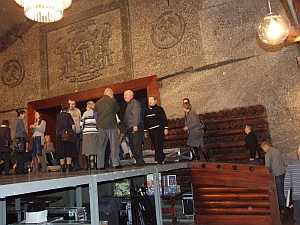
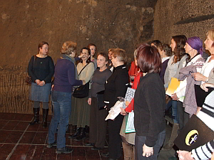
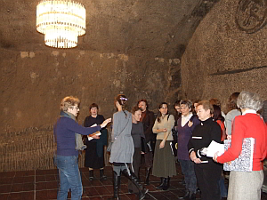
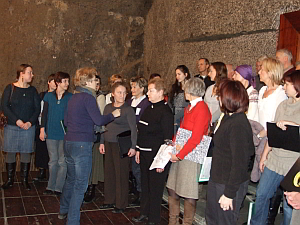

A tymczasem w Cameracie...
.
2012-01-04
Jesteśmy w komplecie. Zjeżdżamy do kopalni. Po co? .... Mamy próbę „ruchową” na scenie w komorze Warszawa, żeby na koncercie jubileuszowym... „nie pozabijać się”. 
Scena wysoka, więc oglądamy wszystko precyzyjnie. Ile miejsca? Kto gdzie stoi? Pani dyrygent tutaj też nami dyryguje: kto, gdzie, z kim, jak i już stoimy.
 
Pada polecenie: „Ewa na koniec komory i słuchać czy dobrze głos się niesie, a wy śpiewać”, więc śpiewamy. Pada stwierdzenie „słychać dobrze, jest ok” ulga, kamień z serca. Oglądamy jeszcze miejsce, aby dobrać dekoracje, kwiaty.
No i koniec. Cóż, więc wracamy. Idziemy gawędząc korytarzami kopalni do windy. Wyjazd na górę i do domu wypocząć, bo jutro znowu próba i znowu ćwiczymy śpiewanie. Teraz są pracowite dni dla Cameraty, ale taka dola jubilatów, nikt się nie skarży, wszyscy pilnie śpiewają.
 do aktualności
do aktualności

© Stowarzyszenie Muzyczne Chór Camerata Wieliczka